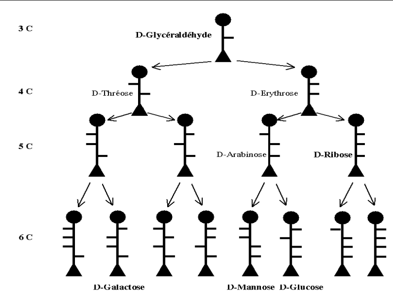
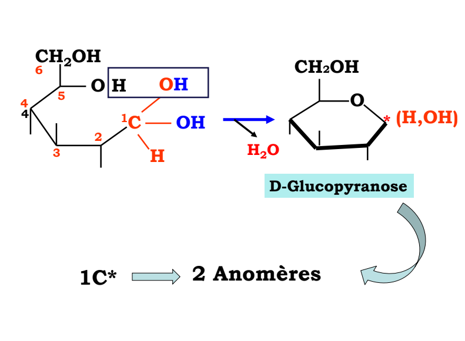
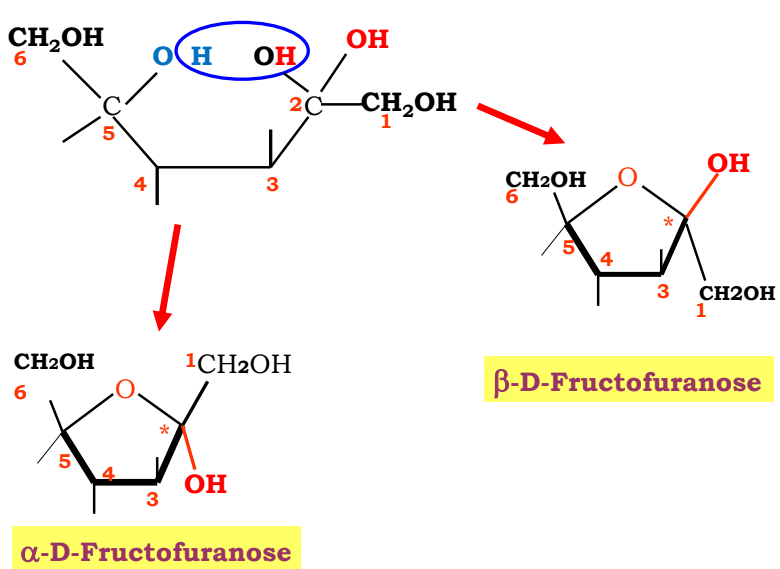
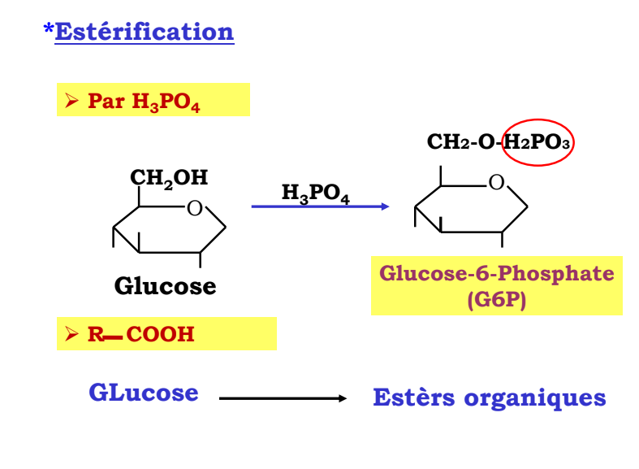
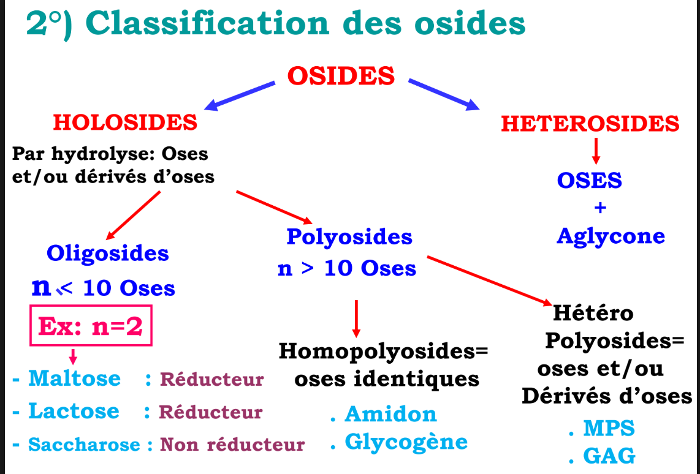
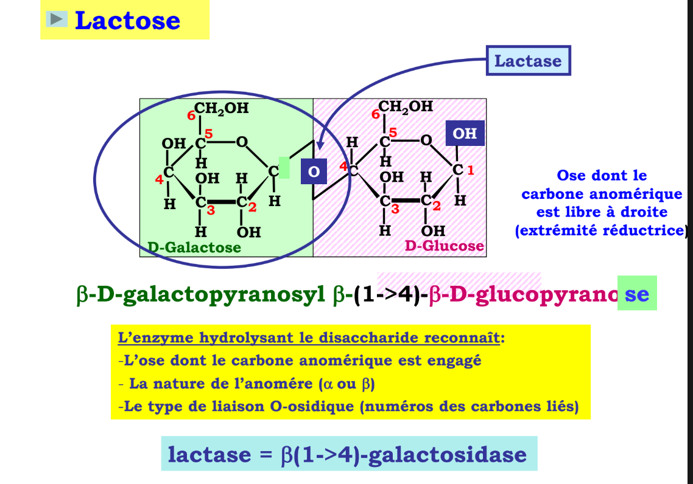
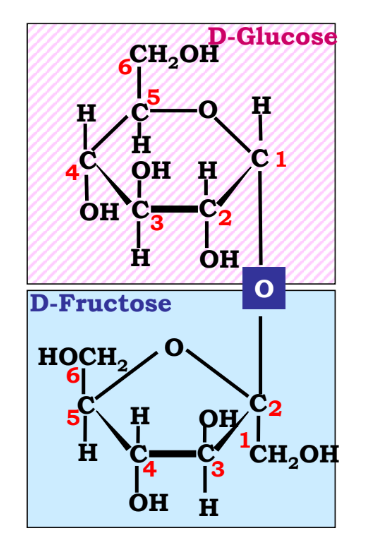
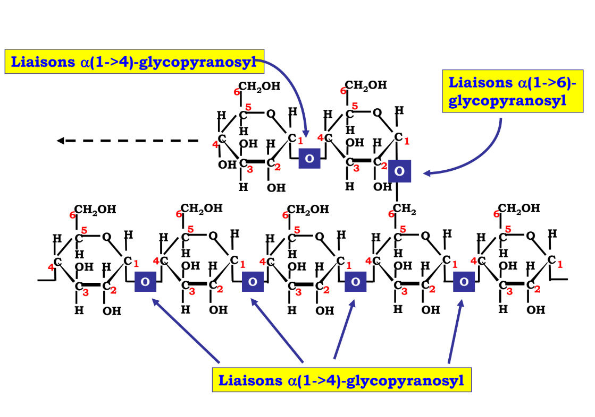

Biochimie structurale
Tout le module au même endroit : les oses, la cyclisation, les propriétés, les osides et les polyosides — expliqués simplement, avec les schémas du diaporama, les pièges d'examen et des QCM corrigés.
D'après le diaporama du Pr. Naamane (93 diapos) et le support du Pr. Khlil (2024-25)
Guide d'examen et plan de révision
Les parties annoncées à l'examen
Le professeur a annoncé que certaines parties tomberaient. Elles sont toutes traitées ici, et signalées par le repère « annoncé ».
| Partie | Ce qu'on doit savoir faire | Où |
|---|---|---|
| Filiation de Keller et Kiliani | Construire l'arbre des oses, définir un épimère, placer mannose / allose / galactose | Chapitre 1 |
| Cyclisation du glucose | Expliquer la formation de l'hémiacétal, distinguer α et β, justifier 36 / 63 / 0,1 % | Chapitre 2 |
| Cyclisation du fructose | Justifier le furanose et le carbone anomérique en C2 | Chapitre 3 |
| Propriétés physiques | Solubilité, saveur, pouvoir rotatoire, mutarotation | Chapitre 4 |
| Propriétés chimiques | Ce que donne C1, C6 et les alcools secondaires (acides, sorbitol, G6P, glucosamine) | Chapitre 5 |
| Classification des osides | Holoside / hétéroside, oligo / polyoside, homopolyoside / hétéropolyoside, l'aglycone | Chapitre 6 |
| Le lactose | Nom complet, liaison, enzyme, réductibilité — la question 11 | Chapitre 7 |
| Bilan lipidique sérique | Les 11 valeurs normales, le lipidogramme 24/56/20 %, les 3 pièges | Chapitre 9 |
| Sphingolipides | La sphingosine, le céramide, les 4 familles, les 3 maladies — question tombée en 2024-25 | Chapitre 10 |
Le plan des 12 séances
| # | Contenu | Référence |
|---|---|---|
| S1 | Définitions, intérêt biologique, vocabulaire (oses, osides, aldose, cétose) | diapos 1-3 |
| S2 | Classification des oses : trioses → hexoses, série D et L | diapos 4-10 |
| S3 | Filiation de Keller et Kiliani, épimères, formule de Fischer | diapos 11-18 |
| S4 | Cyclisation du glucose : hémiacétal, anomères α et β, mutarotation | diapos 19-26 |
| S5 | Cyclisation du fructose : furanose, C2 anomérique | diapos 27-30 |
| S6 | Propriétés physiques : solubilité, saveur, pouvoir rotatoire | diapo 33 |
| S7 | Propriétés chimiques : oxydation, réduction, addition (C1) | diapos 34-36 |
| S8 | Estérification : G6P, esters organiques, acide glucuronique | diapos 37-38 |
| S9 | Liaison osidique, oligosides, les 3 disaccharides | diapos 39-46 |
| S10 | Amidon, glycogène : liaisons α(1→4) et α(1→6) | diapos 47-52 |
| S11 | GAG, MPS, protéoglycanes · puis lipides : acides gras, glycérides, stérols, eicosanoïdes | diapos 53-62 · 63-87 |
| S12 | Bilan lipidique sérique (diapos 88-89) puis sphingolipides et sphingophospholipides (diapos 90-93) + annales chronométrées | diapos 88-93 · annales |
Les oses et la filiation de Keller et Kiliani
- les oses (sucres simples) : molécules non hydrolysables ;
- les osides : molécules hydrolysables, formées d'oses et/ou de dérivés d'oses.
La filiation de Keller et Kiliani annoncé
C'est la première partie annoncée. Le principe tient en une phrase : on allonge la chaîne d'un carbone à la fois, en partant du glycéraldéhyde, et chaque allongement double le nombre d'oses.
Chaque nouveau carbone ajouté devient un carbone asymétrique : il peut porter son OH à droite (D) ou à gauche (L). Les deux oses obtenus à partir d'un même ose sont des épimères : ils ne diffèrent que par la configuration d'un seul carbone.

| Ose | Type | Épimère de | Ce qu'il faut retenir |
|---|---|---|---|
| D-glucose | Aldohexose | — | La référence de tout le chapitre |
| D-mannose | Aldohexose | glucose, C2 | OH du C2 inversé |
| D-allose | Aldohexose | glucose, C3 | OH du C3 inversé |
| D-galactose | Aldohexose | glucose, C4 | OH du C4 inversé — c'est celui du lactose |
| D-fructose | Cétohexose | — | Pas un épimère : c'est une cétose, la fonction change |
Série D et série L
On regarde le carbone chiral le plus éloigné du carbonyle : si son OH est à droite (Fischer), l'ose est de la série D ; à gauche, série L. Les oses naturels sont presque tous de la série D.
Cyclisation du glucose
Pourquoi le glucose se referme en cycle à 6 atomes
L'OH du C5 attaque le carbonyle du C1. Le cycle contient alors 5 carbones + 1 oxygène = 6 atomes : c'est un pyranose (du nom du pyrane). Le C1 devient anomérique et peut se présenter de deux façons :

La mutarotation : 36 / 63 / 0,1 %
Les deux anomères sont en équilibre en solution, par ouverture et refermeture du cycle :
| Forme | Proportion à l'équilibre | Pourquoi |
|---|---|---|
| α-D-glucopyranose | 36 % | OH anomérique trans : un peu moins stable (répulsion avec le CH2OH) |
| β-D-glucopyranose | 63 % | OH anomérique cis : plus stable, donc majoritaire |
| Forme ouverte | 0,1 % | Très minoritaire, mais c'est elle qui porte le carbonyle libre |
Cyclisation du fructose
Pourquoi furanose et non pyranose ?
Dans le fructose, c'est l'OH du C5 qui attaque le carbonyle du C2. Le cycle obtenu contient 4 carbones + 1 oxygène = 5 atomes : c'est un furanose. Un cycle à 6 atomes demanderait l'attaque par l'OH du C6, ce qui est moins favorable ici — le cours retient donc la forme furanose.

| Glucose | Fructose | |
|---|---|---|
| Famille | Aldohexose | Cétohexose |
| Carbone anomérique | C1 | C2 |
| Cycle | 6 atomes = pyranose | 5 atomes = furanose |
| Repère pour α/β | CH2OH du C5 | CH2OH du C6 |
| Le C1 est… | anomérique | un simple CH2OH |
Propriétés physiques des oses
| Propriété | Explication | Conséquence |
|---|---|---|
| Solubilité dans l'eau | Chaque ose porte plusieurs OH qui forment des liaisons hydrogène avec l'eau | Solubles, alors qu'ils sont insolubles dans les solvants organiques (apolaires) |
| Saveur sucrée | Elle dépend de la structure, pas du pouvoir rotatoire | Très variable : le saccharose est très sucré, le lactose peu |
| Pouvoir rotatoire | Les oses sont optiquement actifs (carbones asymétriques) : ils dévient la lumière polarisée | Dextrogyre (d) ou lévogyre (l), mesuré au polarimètre |
Le pouvoir rotatoire, le point le plus rentable
Un ose D n'est pas forcément dextrogyre, et un ose L n'est pas forcément lévogyre. Les deux notations n'ont rien à voir :
- D / L : convention de représentation (position du OH sur le carbone chiral le plus éloigné du carbonyle) ;
- d / l (ou + / −) : mesure expérimentale de la déviation de la lumière polarisée.
Propriétés chimiques des oses
Trois familles de réactions, selon quelle fonction on attaque. C'est le plan à réciter.
1. Sur le carbonyle (C1) — oxydation, réduction, addition
| Réaction | Ce qui se forme | À retenir |
|---|---|---|
| Oxydation | Acide gluconique | La fonction aldéhyde devient acide carboxylique. C'est la base du test de Fehling (2 Cu2+ → 2 Cu+, précipité rouge brique) |
| Réduction | Sorbitol | Le carbonyle devient un alcool : c'est un polyol (édulcorant, pouvoir osmotique) |
| Addition | Hémiacétal | C'est la réaction de cyclisation : un alcool s'ajoute sur le carbonyle |
2. Sur l'alcool primaire (C6)
| Réaction | Produit | Intérêt |
|---|---|---|
| Oxydation | Acide glucuronique | Constitution des GAG ; détoxification (conjugaison) |
| Estérification par H3PO4 | Glucose-6-phosphate (G6P) | 1re étape de la glycolyse (hexokinase) |
| Estérification par R–COOH | Esters organiques | R long = composé liposoluble |
3. L'estérification : la réaction complète
- L'oxygène de l'alcool attaque l'acide ;
- une molécule d'eau est éliminée ;
- il reste une liaison ester : C–O–P pour le phosphate.

| Point | Le glucose-6-phosphate |
|---|---|
| Formation | C6 + H3PO4 → G6P (hexokinase, avec ATP) |
| Charge | Chargé négativement → hydrosoluble |
| Conséquence | Il ne traverse pas la membrane : le glucose est piégé dans la cellule |
| Rôle | 1re étape de la glycolyse |
| Retour | Glucose-6-phosphatase (foie, rein) → glucose libre → glycémie |
4. Sur les alcools secondaires (C2, C3, C4)
| Réactif | Produit | Exemple |
|---|---|---|
| R–NH2 (amine) | Glucosamine | Constitution de l'acide hyaluronique et des GAG |
| R–O–CH3 | Éther-oxyde méthylique | Substitution de l'OH par un groupement méthyle |
Les osides et l'aglycone
- Holosides : l'hydrolyse ne donne que des oses (et/ou des dérivés d'oses) ;
- Hétérosides : l'hydrolyse donne des oses + une partie non glucidique = l'aglycone.

| Niveau | Critère | Exemples |
|---|---|---|
| Osides | Molécules hydrolysables | — |
| Holosides | Hydrolyse → oses uniquement | Maltose, lactose, saccharose, amidon, glycogène, GAG |
| Hétérosides | Hydrolyse → oses + aglycone | Protéoglycanes, glycoprotéines, glycolipides |
| Oligosides | n < 10 oses | Maltose, lactose, saccharose |
| Polyosides | n > 10 oses | Amidon, glycogène, MPS, GAG |
| Homopolyosides | Oses identiques | Amidon, glycogène (que du glucose) |
| Hétéropolyosides | Oses variés | MPS, GAG |
L'aglycone
| Hétéroside | Partie osidique | Aglycone | Liaison |
|---|---|---|---|
| Protéoglycane | Dimères de GAG | Axe protéique | O-osidique sur sérine / thréonine |
| Glycoprotéine | Oligoside | Protéine | O-osidique |
| Glycolipide | Oligoside | Céramide (partie lipidique) | O-osidique |
Les disaccharides et la dénomination
Les trois disaccharides du programme, et la méthode pour les nommer sans faute.
Le lactose — la question 11
Il se lit de gauche à droite : le β est l'anomère du premier ose, « -yl » indique que son carbone anomérique est engagé, « (1→4) » va du C1 du galactose au C4 du glucose.

| D-Galactose | D-Glucose | |
|---|---|---|
| Carbone anomérique | C1 — engagé | C1 — libre |
| Peut s'ouvrir ? | Non | Oui → carbonyle libre |
| Rôle | Extrémité non réductrice | Extrémité réductrice |
La méthode de dénomination en 5 étapes
- Quels sont les deux oses ?
- Quelle forme cyclique ? 6 atomes = pyranose, 5 = furanose.
- Quel carbone anomérique est engagé ? Celui qui porte l'oxygène du pont → il s'écrit en premier, avec « -yl ».
- Quels anomères (α ou β) ? Comparer l'OH anomérique au CH2OH de référence.
- Quels numéros ? La liaison (n → m), dans l'ordre des oses écrits.

| Disaccharide | Nom complet | Enzyme | Réducteur ? |
|---|---|---|---|
| Maltose | α-D-glucopyranosyl (1→4) α-D-glucopyranose | α(1→4)-glucosidase | Oui |
| Lactose | β-D-galactopyranosyl (1→4) β-D-glucopyranose | β(1→4)-galactosidase | Oui |
| Saccharose | α-D-glucopyranosyl (1→2) β-D-fructofuranose | α(1→2)-glucosidase = β(2→1)-fructosidase | Non |
Amidon, glycogène et GAG
- α(1→4) : C1 d'un glucose relié au C4 du suivant → la chaîne (le fil) ;
- α(1→6) : C1 relié au C6 d'un glucose de la chaîne → la ramification (l'arbre).

| Amylose | Amylopectine | Glycogène | |
|---|---|---|---|
| Liaisons | α(1→4) seulement | α(1→4) + α(1→6) | α(1→4) + α(1→6) |
| Structure | Linéaire | Branchée | Très branchée |
| Branchement | — | tous les 20-30 résidus | tous les 8-12 résidus |
| Part de l'amidon | 20 % | 80 % | — |
| Localisation | Végétal | Végétal | Foie + muscle |
| Digestion | Lente | Plus rapide | Très rapide |
Les GAG
| GAG | Composition | Où |
|---|---|---|
| Acide hyaluronique | Acide glucuronique + N-acétyl-glucosamine (sans sulfate) | Liquide synovial, vitré, cartilage ; détruit par les hyaluronidases |
| Chondroïtine sulfate | Acide glucuronique + N-acétyl-galactosamine sulfatée | Cartilage |
| Kératane sulfate | Galactose + N-acétyl-glucosamine sulfatée | Cornée, cartilage |
Bilan lipidique sérique
Le tableau à connaître par cœur
La diapositive sépare les valeurs en deux blocs : « Standard » (les grands paramètres) et « Détaillé » (les fractions fines). Voici les deux, ensemble.
| Paramètre | Valeur normale | Bloc de la diapo |
|---|---|---|
| Lipides totaux sériques | 5 à 8 g/L | Standard |
| Triglycérides | 0,5 à 1,5 g/L | Standard |
| Cholestérol total — adulte | 1,7 à 2,5 g/L | Standard |
| Cholestérol total — enfant | 1,5 à 2 g/L | Standard |
| Cholestérol HDL | 0,4 à 0,8 g/L | Détaillé |
| Cholestérol LDL | 1,1 à 1,9 g/L | Détaillé |
| Cholestérol estérifié / cholestérol total | 0,6 à 0,7 (soit 60 à 70 %) | Détaillé |
| Phospholipides sériques | 1,5 à 2,5 g/L | Détaillé |
| Acides gras libres (AGL) | 0,07 à 0,2 g/L | Détaillé |
| Apoprotéines A1 | 0,9 à 1,8 g/L | Détaillé |
| Apoprotéines B | 0,9 à 1,6 g/L | Détaillé |
Le lipidogramme : 24 / 56 / 20 %
Le lipidogramme sépare les lipoprotéines par électrophorèse. Chaque fraction migre à une position, d'où son nom grec :
| Fraction | Nom à l'électrophorèse | Proportion | Ce qu'elle transporte |
|---|---|---|---|
| HDL | α (alpha) | 24 % | Le cholestérol « de retour » vers le foie |
| LDL | β (bêta) | 56 % | Le cholestérol distribué aux tissus |
| VLDL | pré-β (pré-bêta) | 20 % | Les triglycérides endogènes |
Cohérence interne du bilan (question de raisonnement)
On peut vérifier les valeurs les unes contre les autres :
- Cholestérol total ≈ HDL + LDL + la part du VLDL. Avec 0,4-0,8 (HDL) + 1,1-1,9 (LDL), on est déjà à 1,5-2,7 g/L, du même ordre que le total 1,7-2,5 g/L : les valeurs sont cohérentes.
- Lipides totaux = cholestérol + triglycérides + phospholipides + acides gras libres. C'est pour cela que les lipides totaux (5-8 g/L) sont bien plus élevés que chaque fraction prise seule.
- Les acides gras libres ne représentent qu'une fraction infime (0,07-0,2 g/L) : l'essentiel des lipides circule estérifié dans les lipoprotéines, pas sous forme libre.
2. L'âge : le cholestérol total est plus bas chez l'enfant (1,5-2) que chez l'adulte (1,7-2,5). Inverser les deux est l'erreur classique.
3. Le jeûne : 12 heures, et on dose le sérum. Un bilan sans jeûne n'est pas interprétable à cause des triglycérides.
Ce que le cours ne dit pas (lecture clinique)
- un LDL élevé et un HDL bas sont associés au risque athérogène (athérosclérose, maladie coronarienne) ;
- une hypertriglycéridémie oriente vers l'alimentation, l'alcool ou le diabète ;
- les apoprotéines servent de marqueurs plus fins que le simple cholestérol (A1 pour les HDL, B pour les LDL).
Question type, corrigée
Sphingolipides et sphingophospholipides
La sphingosine : trois positions à connaître par cœur
Retiens la molécule comme une colonne vertébrale à trois étages. Chaque étage porte une fonction précise, et c'est cette fonction qui décide de tout ce qui va être greffé :
| Position | Formule du cours | Fonction | Ce qui s'y fixe |
|---|---|---|---|
| C1 | CH2OH | Alcool primaire | La tête polaire : phosphocholine, ose, oligoside |
| C2 | CH–NH2 | Amine | L'acide gras (liaison amide) → le céramide |
| C3 | CH–OH | Alcool secondaire | Reste libre |
| R′ | Chaîne hydrocarbonée | — | La queue apolaire |
Le céramide : le socle commun
La sphingosine + 1 acide gras sur son amine, avec élimination d'eau, donne le céramide (du latin cera, la cire). C'est la brique de base de toute la famille : chaque famille de sphingolipides = céramide + quelque chose sur le C1.
| Formule du cours | |
|---|---|
| Sphingosine | R′–CH–OH / CH–NH2 / CH2OH |
| + R1–COOH | acide gras + H2O (l'amine devient amide) |
| = Céramide | R′–CH–OH / CH–NH–C(=O)–R1 / CH2OH |
Les quatre familles, à partir du céramide
| Famille | Greffé sur le C1 | Où | Enzyme qui coupe | Maladie si déficit |
|---|---|---|---|---|
| Sphingomyélines | Phosphocholine (P + choline) | Cortex cérébral, gaine | Sphingomyélinase | Niemann-Pick : grosse rate + troubles neurologiques |
| Cérébrosides | Un ose : galactose (cerveau) ou glucose (rein) | Cerveau, rein | β-glucosidase | Gaucher |
| Gangliosides | Ose + dérivés d'oses | Cerveau | Hexosaminidase (détache le N-acétyl-galactose) | Tay-Sachs |
| Glycolipides neutres | Glucose [+ un ose] | Surface des cellules | — | — (ce sont les groupes sanguins) |
a) Les sphingomyélines
« La sphingosine est liée à un acide gras par sa fonction amine et à une phosphocholine par sa fonction alcool primaire. » Ce sont des constituants des membranes cellulaires, surtout dans le cortex cérébral et la gaine des nerfs.
b) Les cérébrosides
Céramide + un ose lié à l'alcool primaire. Le cours donne deux localisations :
- Galactose → le cerveau (cérébroside au sens strict) ;
- Glucose → le rein, et pas les autres tissus.
c) Les gangliosides
Céramide + un ose plus des dérivés d'oses (dont le N-acétyl-galactose). Ils siègent au niveau du cerveau et sont les récepteurs de la sérotonine, de certains virus et de certaines toxines.
d) Les glycolipides neutres
Céramide + glucose, éventuellement + un ose. Ce sont les déterminants des groupes sanguins à la surface des globules rouges.
Les pièges de ce chapitre
2. « Tous les sphingolipides contiennent deux acides gras » → faux : un seul, lié à l'amine du C2.
3. « Ils contiennent du glycérol » → faux : c'est la sphingosine qui joue le rôle du glycérol.
4. « Ce sont des composés hydrophobes » → faux : ils sont amphiphiles (amphotères) : une tête polaire (C1) et une double queue apolaire (la chaîne de la sphingosine + celle de l'acide gras). C'est ce qui les rend capables de former la bicouche des membranes.
5. Ne pas confondre céramide (sphingosine + 1 AG) et sphingomyéline (céramide + phosphocholine) : la question « un céramide contient-il du phosphate ? » est fausse, mais « une sphingomyéline en contient-elle ? » est vraie.
La question tombée à l'examen (2024-2025)
- A : seules les sphingomyélines ont un phosphate ; un cérébroside ou un ganglioside n'en a pas.
- C : le précurseur de la vitamine D3 est le cholestérol (un stéride), pas un sphingolipide. Le piège consiste à faire glisser la propriété d'une autre famille de lipides.
- D : un seul acide gras, sur l'amine du C2.
- E : l'ossature est la sphingosine, jamais le glycérol.
Q39 — la question « phospholipides » qui précède
| Proposition | Verdict d'après le cours | Pourquoi |
|---|---|---|
| A. uniquement C, H, O | Faux | Le cours : « ils sont formés de C, H, O, mais peuvent contenir d'autres éléments : phosphore (phospholipides), soufre et azote (lécithines, sphingomyélines), oses (cérébrosides), alcools (sphingosines). » |
| B. pas d'alcool autre que le glycérol | Faux… avec une réserve | Le cours classe les phospholipides en glycérophospholipides ET sphingophospholipides, et ces derniers portent la sphingosine, un amino-alcool. Donc faux. Mais si le professeur restreint ici « phospholipides » à la section 4° (lécithine / céphaline / phosphatidyl-sérine, toutes à glycérol), B devient la seule proposition vraie : c'est probablement la clé attendue, et c'est justement l'ambiguïté qui fait le piège. |
| C. hydrophobes | Faux | La diapositive dit « COMPOSÉS AMPHOTÈRES » : amphiphiles, une tête polaire et deux queues apolaires — c'est ce qui bâtit la bicouche. |
| D. rôle énergétique | Faux | Rôle structural : « constituants des membranes cellulaires ». Le rôle énergétique est celui des triglycérides. |
| E. pas dans les membranes | Faux | C'est exactement l'inverse : ils sont la membrane. |
La question de la session 2025 (fichier « N2026 »)
La matrice : une ligne par énoncé possible
| Si l'énoncé demande… | Réponse | Pourquoi |
|---|---|---|
| « lesquels sont des sphingolipides ? » | B, C, D | Tous les trois ont la sphingosine. A est le seul à avoir le glycérol → exclu. |
| « lesquels contiennent de la sphingosine ? » | B, C, D | Même raisonnement : c'est la définition de l'ossature. |
| « lesquels sont des phospholipides ? » | A, B | Le cours sépare les phospholipides en glycérophospholipides et sphingophospholipides. C et D n'ont pas de phosphate. |
| « lesquels contiennent du phosphate ? » | A, B | Même frontière : le phosphate est dans les deux familles phosphorylées. |
| « lesquels sont des lipides complexes (composés) ? » | A, B, C, D | Le cours range dans les lipides complexes : les phospholipides (A et B) et les glycolipides (D, dont les cérébrosides C sont un cas particulier). |
| « lesquels contiennent un ose ? » | C, D | Le sucre est la marque des glycolipides : galactose (cerveau) ou glucose (rein) pour les cérébrosides. |
| « lesquels contiennent du glycérol ? » | A seulement | B, C et D partagent la sphingosine à la place du glycérol. |
| « lequel n'est pas un sphingolipide ? » (réponse unique) | A | L'exception est toujours celle qui porte le glycérol. |
Ce que disent les annales (vérifié)
| Épreuve | Question sur cette partie ? | Source |
|---|---|---|
| 2024-2025 · 1re session | Oui — Q39 et Q40 : une question « phospholipides » puis une question « sphingolipides » | Texte du PDF lu intégralement |
| Session 2025 (fichier « N2026 », scan) | Oui : une question à réponses multiples sur glycérophospholipides / sphingophospholipides / cérébrosides / glycolipides (l'index y trouve aussi « céramide » et « sphingomyéline ») | Options confirmées par l'index du Drive ; énoncé illisible (scan sans couche texte) |
| « Chimie-Biochimie QCM » (scan) | Oui : contient « Tay-Sachs » et « Gaucher » | Scan : non citable |
| 2023 (grille), compilation S1 2024, « EXAMS S1 2024 » | Non : indexés, ils contiennent amidon / saccharose / cholestérol mais aucun terme des sphingolipides | Recherche plein texte du Drive |
| 2021-2022, 2024, « Exam 2025 », « TD 2025 », compilation S1 2023 | Indéterminé : scans non indexés, illisibles sans OCR | — |
Question type, corrigée
Examen blanc chronométré
Comme le jour de l'examen : tu réponds à tout sans voir la correction. À la fin, tu obtiens ta note sur 20 et le détail de chaque question.
Flashcards
Lis la question, réponds dans ta tête, puis clique sur la carte. « À revoir » la remet à la fin du paquet ; « Je savais » la retire.